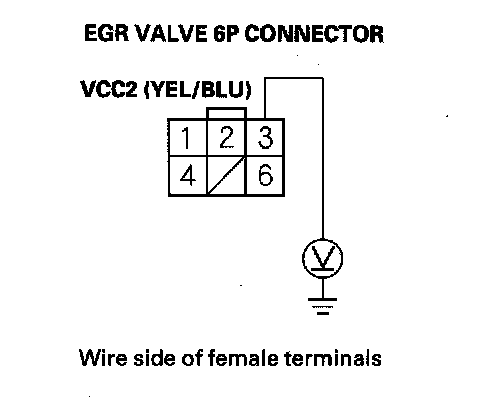
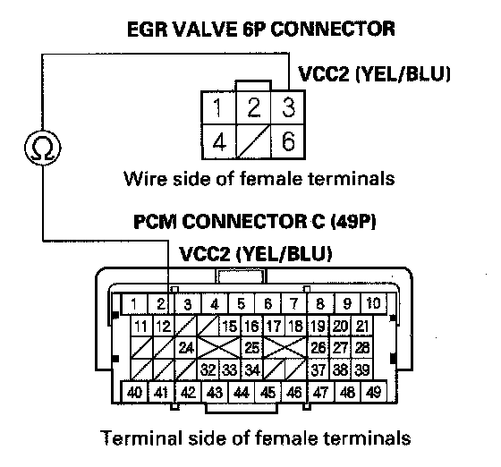
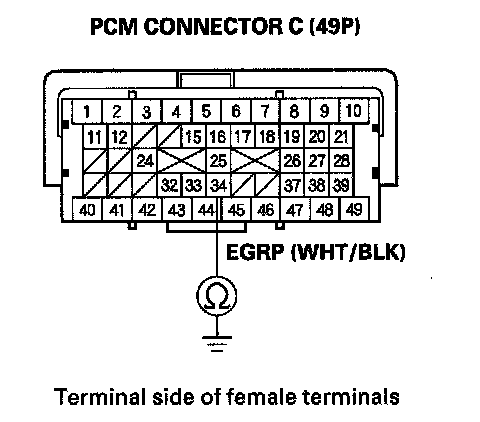
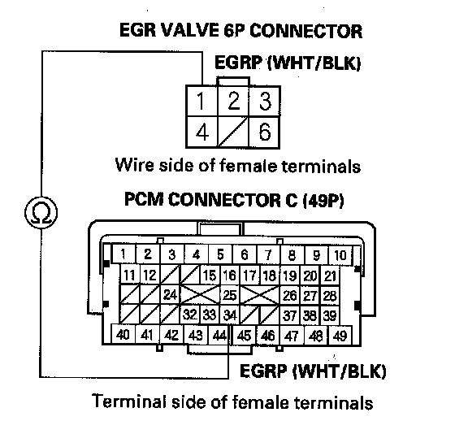
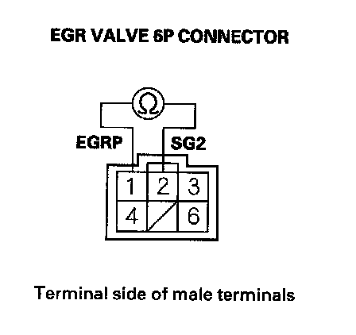
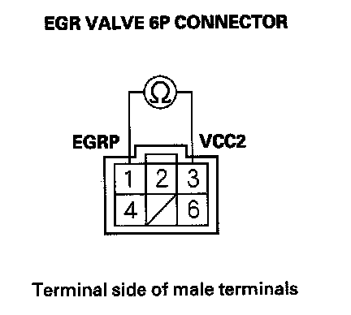
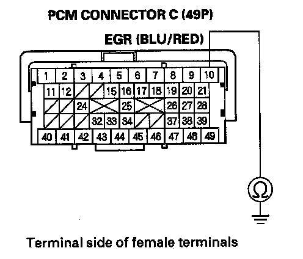
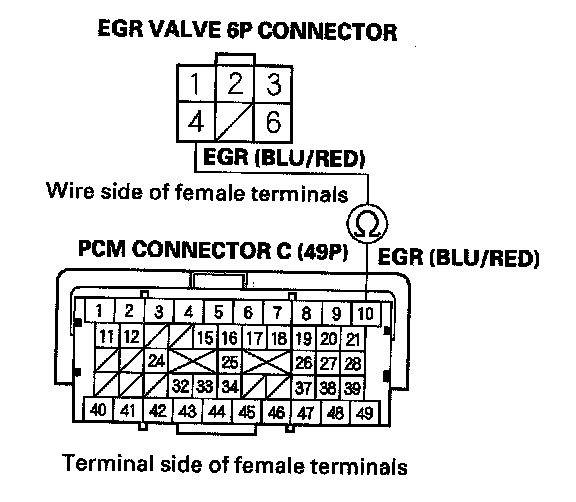
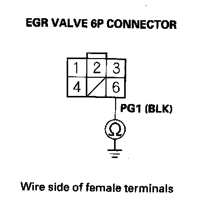
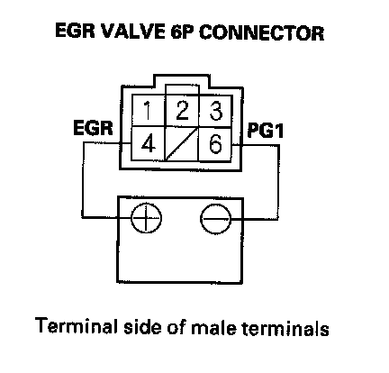

DTC Troubleshooting
DTC P2413: EGR System MalfunctionNOTE: Before you troubleshoot, record all freeze data and any on-board snapshot, and review the general troubleshooting information.
1. Turn the ignition switch ON (II).
2. Clear the DTC with the HDS.
3. Start the engine. Hold the engine speed at 3,000 rpm without load (in Park or neutral) until the radiator fan comes on, then let it idle.
4. Do the EGR TEST in the INSPECTION MENU with the HDS.
Is the result OK?
YES - Intermittent failure, the system is OK at this time. Check for poor connections or loose terminals at the EGR valve and the PCM.
NO - Go to step 5.
5. Turn the ignition switch OFF.
6. Turn the ignition switch ON (II).
7. Check the EGR VLS in the DATA LIST with the HDS.
Is about 0 V indicated?
YES - Go to step 8.
NO - Go to step 21.
8. Turn the ignition switch OFF.
9. Disconnect the EGR valve 6P connector. 10. Turn the ignition switch ON (II).

11. Measure voltage between EGR valve 6P connector terminal No. 3 and body ground.
Is there about 5 V?
YES - Go to step 16.
NO - Go to step 12.
12. Turn the ignition switch OFF.
13. Jump the SCS line with the HDS.
14. Disconnect PCM connector C (49P).

15. Check for continuity between PCM connector terminal C12 and EGR valve 6P connector terminal No. 3.
Is there continuity?
YES - Go to step 52.
NO - Repair open in the wire between the EGR valve and the PCM (C12), then go to step 44.
16. Turn the ignition switch OFF.
17. Jump the SCS line with the HDS.
18. Disconnect PCM connector C (49P).

19. Check for continuity between PCM connector terminal C34 and body ground.
Is there continuity?
YES - Repair short in the wire between the PCM (C34) and the EGR valve, then go to step 44.
NO - Go to step 20.

20. Check for continuity between PCM connector terminal C34and EGR valve 6P connector terminal No. 1.
Is there continuity?
YES - Go to step 21.
NO - Repair open in the wire between the PCM (C34) and the EGR valve, then go to step 44.
21. Turn the ignition switch OFF.
22. Disconnect the EGR valve 6P connector.

23. At the EGR valve side, measure resistance between EGR valve 6P connector terminals No. 1 and No. 2.
Is there 100 k ohms, or more?
YES - Go to step 43.
NO - Go to step 24.

24. At the EGR valve side, measure resistance between EGR valve 6P connector terminals No. 1 and No. 3.
Is there 100 k ohms or more?
YES - Go to step 43.
NO - Go to step 25.
25. Jump the SCS line with the HDS.
26. Disconnect PCM connector C (49P).

27. Check for continuity between PCM connector terminal CIO and body ground.
Is there continuity?
YES - Repair short in the wire between the PCM (C10) and the EGR valve, then go to step 44.
NO - Go to step 28.

28. Check for continuity between PCM connector terminal C10 and EGR valve 6P connector terminal No. 4.
Is there continuity?
YES - Go to step 29.
NO - Repair open in the wire between the PCM (C10) and the EGR valve, then go to step 44.

29. Check for continuity between EGR valve 6P connector terminal No. 6 and body ground.
Is there continuity?
YES - Go to step 30.
NO - Repair open in the wire between the EGR valve and G101, then go to step 44.
30. Reconnect PCM connector C (49P).

31. Connect the battery positive terminal to EGR valve 6P connector terminal No. 4 with a jumper wire.
32. Start the engine and let it idle, then connect the battery negative terminal to EGR valve 6P connector terminal No. 6 with a jumper wire.
Does the engine stall or run rough?
YES - Go to step 51.
NO - Go to step 33.
33. Turn the ignition switch OFF.
34. Remove the EGR valve.
35. Clean the intake manifold EGR port at the passage inside the EGR valve with throttle plate and induction cleaner.
36. Install the EGR valve.
37. Reconnect all connectors.
38. Turn the ignition switch ON (II).
39. Reset the PCM with the HDS.
40. Do the PCM idle learn procedure.
41. Do the EGR TEST in the INSPECTION MENU with the HDS.
Is the result OK?
YES - Go to step 49.
NO - Go to step 42.
42. Turn the ignition switch OFF.
43. Replace the EGR valve.
44. Reconnect all connectors.
45. Turn the ignition switch ON (II).
46. Reset the PCM with the HDS.
47. Do the PCM idle learn procedure.
48. Do the EGR TEST in the INSPECTION MENU with the HDS.
49. Check for Temporary DTCs or DTCs with the HDS.
Is DTC P2413 indicated?
YES - Check for poor connections or loose terminals at the EGR valve and the PCM, then go to step 1.
NO - Go to step 50.
50. Monitor the OBD STATUS for DTC P2413 in the DTCs MENU with the HDS.
Does the screen indicate PASSED?
YES - Troubleshooting is complete. If any other Temporary DTCs or DTCs were indicated in step 49, go to the indicated DTCs troubleshooting.
NO - If the screen indicates FAILED, check for poor connections or loose terminals at the EGR valve and the PCM, then go to step 1. If the screen indicates EXECUTING or OUT OF CONDITION, keep idling until a result comes on.
51. Turn the ignition switch OFF.
52. Reconnect all connectors.
53. Update the PCM if it does not have the latest software, or substitute a known-good PCM.
54. Do the EGR TEST in the INSPECTION MENU with the HDS.
55. Check for Temporary DTCs or DTCs with the HDS.
Is DTCP2413 indicated?
YES - Check for poor connections or loose terminals at the EGR valve and the PCM. If the PCM was updated, substitute a known-good PCM, then recheck. If the PCM was substituted, go to step 1.
NO - Go to step 54.
56. Monitor the OBD STATUS for DTC P2413 in the DTCs MENU with the HDS.
Does the screen indicate PASSED?
YES - If the PCM was updated, troubleshooting is complete. If the PCM was substituted, replace the original PCM. If any other Temporary DTCs or DTCs were indicated in step 55, go to the indicated DTCs troubleshooting.
NO - If the screen indicates FAILED, check for poor connections or loose terminals at the EGR valve and the PCM. If the PCM was updated, substitute a known-good PCM, then recheck. If the PCM was substituted, go to step 1. If the screen indicates EXECUTING or OUT OF CONDITION, keep idling until a result comes on.